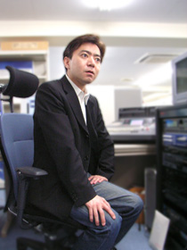

「クリエイターズ インタビュー」 第4回目は、
『ソニック ラッシュ』でサウンドを担当した長沼 英樹を紹介！
プロフィール：
長沼 英樹（ながぬま ひでき）
セガ/NEソフト研究開発部/サウンドセクション
『セガラリー2』(DC)、『ジェットセットラジオ』(DC)、『JSRF～ジェットセットラジオフューチャー』(XBOX)、
『サカつく3』(PS2)、『オーリーキング』(AC)、『ソニックラッシュ』(NDS)、『セガラリー2006』(PS2)等の音楽制作を担当。
今回は、『ソニック ラッシュ』でサウンドを担当されました、長沼さんにお話しを伺いたいと思います。
どうぞよろしくお願いいたします！
こちらこそ宜しくお願い致します！
まず、セガに入ったきっかけ、動機などを教えていただけますでしょうか？
昔から音楽制作はずっとやってまして、
YAMAHAのオーディションがきっかけで、
10代後半～20代前半の頃は
某レコード会社とアーティスト契約をしておりました。
曲を作ってはスタジオで録音して、
というようなアーティスト活動もしていました。
結局、デビューには至りませんでしたけどネ。
青山の超有名某JAZZクラブでバーテンや、
店内のDJしたりもしていました。
そしてJAZZやフュージョンなんかも吸収したら、
ポップスだけでなく、映画音楽的なこともやりたいと段々思うようになり、
現実的に今、映画に一番近いものはゲームかな？と思い、
当時サターンも持っていてゲームも好きでしたし、
思い切ってセガにデモテープを送ってみました。
その結果、見事採用されてしまったわけです。（笑）
超有名某JAZZクラブでバーテンの経験も！
なるほど。長沼さん、バーテンダーの制服もすごく似合う気がします。
若いころの色々な経験が、今の長沼サウンドを形成していったわけですね。
セガに入って、どのようなことがやりたいと思っていましたか？
当初は映画に近いような音楽を制作してみたいと思っていました。
最初に関わったのがDreamcast版『セガラリー2』だったので、
スピード感、疾走感のある曲をたくさん作っているうちに、
アップテンポもしくはダンサブルな曲が得意といいますか、楽しくなってきました。
もともとダンスミュージックは大好きで、80年代後半のユーロビートのRemix盤とか聴いていましたけど。
学生時代は、どのようなことに力を入れていましたか？
小学校と中学前半はずっとバスケ部で、副キャプテンもやっていたのです。
中学後半から高校3年間は、とにかくバイトしてお金ためて、シンセサイザーなどの機材を買って、
デモテープを作っては、オーディションやレコード会社に送っていました。
バスケ部で副キャプテンとは！この業界、体育会系の方は少ないので、ちょっと意外な気もします。
でも、長沼さんの長身を考えると、「バスケ部」というのはなんとなく納得の部分もありますね。
中学生時代後半から、音楽の道を歩みだしたとのことですが、きっかけのようなものが
あったのでしょうか？何か影響を受けたものはありますか？
音楽自体は、5歳の頃からエレクトーンを習っていたので、リズムに乗りながら鍵盤弾くとか、
即興でメロディを考えるとかは得意でした。
で、中学の頃から洋楽を聴き始めるようになって、特にプリンスとか、
スティーヴィー・ワンダーとか、
一人で全部やってしまう系のアーティストに感化されました。
そして、一人でやるには打ち込みという世界がある事を知り、
メーカーのパンフレットや雑誌で調べては機材を買い揃えていきました。
14歳の頃には、俺は音楽でメシを食っていくと心に決めていましたね。(笑)
小さいころから恵まれた環境だったのですね。
仕事以外の趣味も聞いていいですか？
映画は大好きで、DVDを買い集めています。
昔はもっぱら洋画派で、ゴダール、フェリーニ、ジャームッシュやカラックス、
（あとテリー・ギリアムもいいですね）など、監督中心で観てきて、
今は、60年～70年代の古い日本映画ばっかり観ています。
監督さんでいうと、成瀬巳喜男や木下恵介、野村芳太郎、そして小津安二郎！
映画以外では、格闘技(ガチンコで真剣勝負のもの)観戦や、F1観るのも大好きですよ。
あとは、松本人志信者なので、松っちゃんのDVD(ダウンタウンも)や本は全部持ってます。